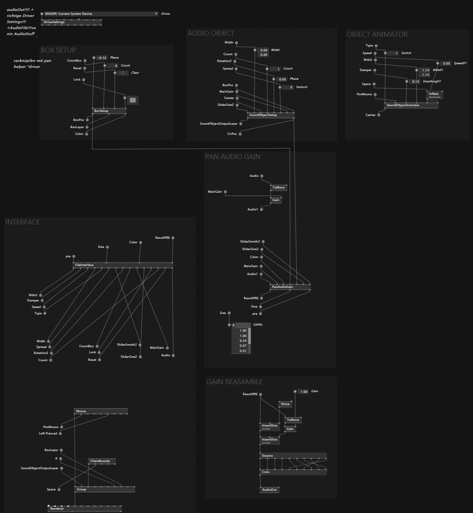

Immersive Audio
This project, led by Connor Safran, a graduate of the Electroacoustic Music Studio at Hanns Eisler Berlin, focused on immersive audio design and live electronic performance techniques. Participants were introduced to Max for Live, a node-based programming extension for Ableton, used to control an 8.1 channel Genelec system for creating surround sound experiences.
Production
The first part of the project involved using a spatial audio panner tool to control sound placement in 3D space by calculating the volume of each speaker based on the distance to a virtual audio source. Fascinated by this, I rebuilt the algorithm in vvvv, a visual programming environment, to fully understand its core functionality. This process involved developing features like multiple audio sources and sound walls, and creating an interface to make key parameters accessible.  In the second phase, we collaborated on an interactive installation exhibited at Köln Passagen 24. I worked with Carlos Luis Strohm to explore generative music and sound processing using both Max and vvvv. We developed various audio generators and effects, aiming to create an interactive experience where visitors could influence the soundscape using motion and acceleration data captured by an **M5 microcontrollerProgramms
- vvvv Gamma
- Max for Live
- Ableton Live
- Arduino IDE